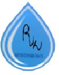

Home
About Us
Our Experts
Consultancy Topics
Project Completed
Our Clients
Contact Us

RK-WATERS CONSULTANCY SERVICES
Together... We Improve......
Our Experts
Prof. (Dr) RAMKRISHNA SURYAWANSHI IES (1981)
CHAIRMAN & MANAGING DIRECTOR “RK-WATERS”
Designations : Ex Chief Engineer, CWC & Emeritus Professor, CoEP
Experience in water sector : 42 years
Industrial experience : 25 Years
Academic & Research experience : 17 tears
EDUCATIONAL QUALIFICATIONS:
Sr. No
Degree obtained
Institution/ University
Subjects
1
B.Tech.
IIT Kanpur
Civil Engineering
2
M.E.
IIT Roorkee
Hydrology
3
Ph.D.
IIT Mumbai
Flood Management using Geospatial Tools
4
LL.B
Unv. of Pune
Law
Fellow of Institution of Engineers
Life Member of Indian Water Resource Society (IWRS)
Life Member and former Executive Member of Indian Society of Hydraulics (ISH)
Life Member Indian Society of Geomatics (ISG)
Convenor of IWRS, Pune
Former Chairman of ISG, Pune Center
AWARDS & RECOGNITIONS
Raobahadur N S Joshi Irrigation Engineer Award -2005” by Institution of Engineers (India),Pune.
M/S M B Gharpure Innovative UG/PG Project Award -2022 – Alumni Association of CoEP, Pune
“Er. S G Shirke Award” Best Project Guide by IWRS-Pune.“Khandesh Bhushan” by the Khandeshi Mandal, Pune National Merit Scholarship-1973 Govt of India.
High School Scholarship-1969 (First in the District)
COURSES TAUGHT (Post Graduate Level)
Advance Hydrology & Hydraulics
Applications of Geoinformatics in water and environmental management
Integrated Water Resources Management (IWRM)
Industrial experience : 25 Years
Transport of Water & Waste Water (Urban water supply & Sanitation)
Ph.D. Examiner
“In Integrated flash flood risk management in Himalayan region”- Prasad Kunjir (CoEP)
“Development of innovative precast concrete structural elements for small water retaining structures”- Premlata D Patil (CoEP)
ACDEMIC CONTRIBUTION BY WELL KNOWN PUBLISHERS